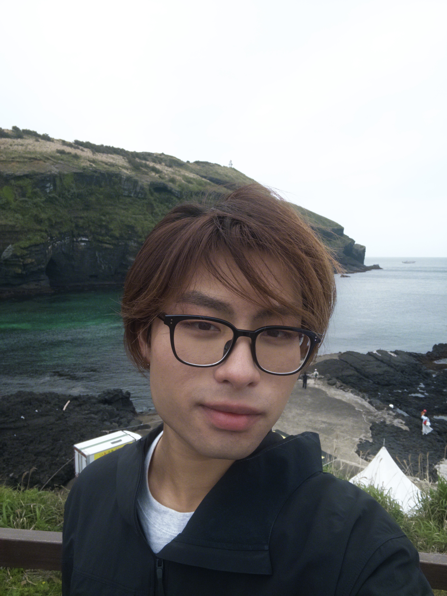
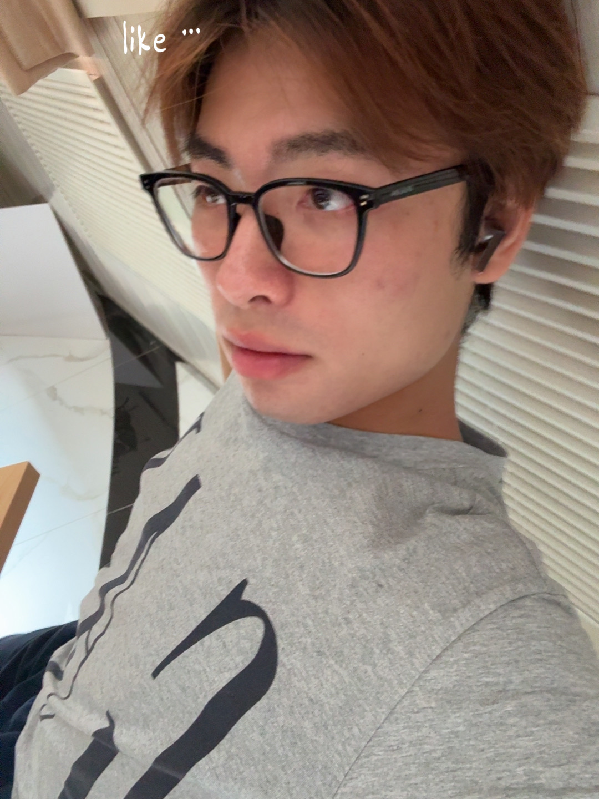

The PalaceClick to unfold
<BackARTIST
León (Ma Haitong) is a bachelor student of BLCU who majors in Communication Studies.
That's all I have to say. If you want to know more, please explore.



León (Ma Haitong) is a bachelor student of BLCU who majors in Communication Studies.
That's all I have to say. If you want to know more, please explore.

